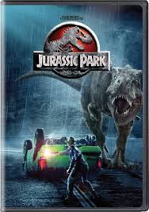

Um bilionário cria um parque isolado com dinossauros vivos clonados a partir de DNA pré-histórico. Antes da abertura, especialistas e seus netos visitam o local para uma inspeção. Contudo, falhas de segurança e sabotagem fazem os sistemas caírem, e os dinossauros escapam, forçando todos a lutarem por suas vidas.